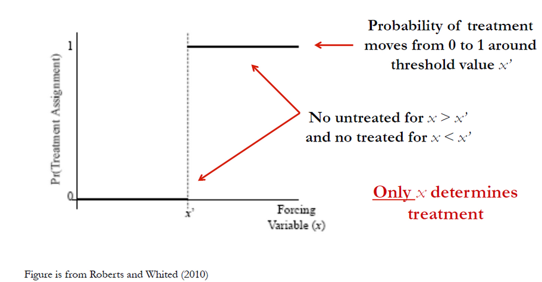
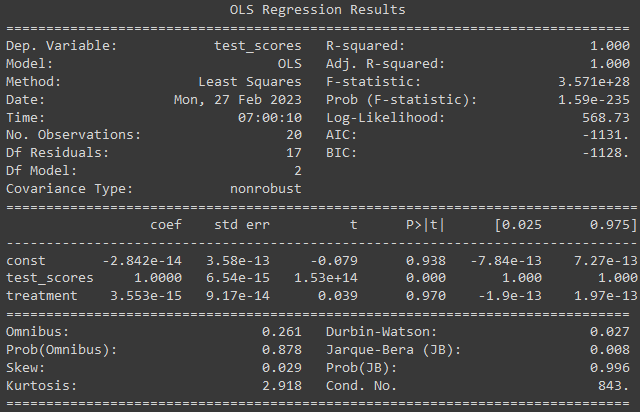
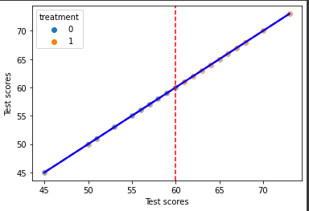

Sharp Regression Discontinuity Design: An Introduction

A Sharp Regression Discontinuity Design (SRDD) employs regression discontinuity to estimate causal effects. When a threshold exists in the outcome variable, SRDD is used. SRDD can provide unbiased estimates of the causal effects of the treatment or intervention on the outcome variable by determining the threshold. This threshold can be a policy change, a cutoff score, or any other sharp change in the outcome variable.
SRDD is based on the assumption that the treatment or intervention will have a sharp, discontinuous effect at the threshold. The basic concept is to compare the outcomes of individuals just above and just below the threshold. It is therefore possible to attribute any difference in outcomes between individuals who are near the threshold and those who are just below it to the intervention or treatment.
In SRDD, individuals are classified into treatment or control groups in accordance with their distance from the threshold. Individuals enrolled in the treatment group are those who are just above the threshold, while those enrolled in the control group are those who are just below the threshold. The control group is assumed to be identical to the treatment group except for the treatment or intervention.
As an example, suppose a university is considering changing its policy to provide financial aid to students who score above a specified threshold on a standardized test. The threshold for receiving the financial aid is 80 points. To estimate the causal effects of receiving financial aid on students’ GPAs, we will use an example.
Our method of estimating this effect includes the collection of data on test scores, GPAs, and other relevant variables for all students at the university. Then, we divide the students into two groups: those who achieved a test score just above or below the 80-point threshold. In order to estimate the relationship between GPAs and financial aid received, we can control for other relevant variables and use a regression model.
In order to estimate causal effects in economics and the social sciences, Sharp Regression Discontinuity Design (RD) is often used as a research design. When a continuous independent variable has a threshold or cutoff value, RD is utilized, and units above or below the threshold are assigned to a treatment group and a control group, respectively. By using a Sharp RD design, the average treatment effect (ATE) at the threshold is estimated, which is the difference between the potential outcomes of the treatment and control groups.
Assuming constant effects and linearity in the independent variable 𝑋𝑖:
𝑌𝑖0 = 𝛼 + 𝛽𝑋𝑖
𝑌𝑖1 = 𝑌𝑖0 + 𝜏
Using the switching equation 𝑌𝑖 = 𝑌𝑖0 + 𝑌𝑖1 - 𝑌𝑖0 𝐷𝑖, we get:
𝑌𝑖 = 𝛼 + 𝛽𝑋𝑖 + 𝜏𝐷𝑖 + 𝜖𝑖
where 𝑌𝑖 is the outcome variable for unit 𝑖, 𝑋𝑖 is the independent variable for unit 𝑖, 𝐷𝑖 is the treatment assignment for unit 𝑖 (equal to 1 if 𝑋𝑖 > 𝑐 and 0 otherwise), 𝜏 is the ATE at the threshold 𝑐, and 𝜖𝑖 is the error term.
Sharp RD designs estimate the ATE at the threshold using the conditional expectation:
𝜏𝑆𝑅𝐷 = 𝔼[𝑌1 − 𝑌0|𝑋 = 𝑐]
where 𝑌1 and 𝑌0 are the potential outcomes for the treatment and control groups, respectively.
Here’s an example Python code to illustrate the process:
import pandas as pd
import statsmodels.api as sm
import seaborn as sns
import matplotlib.pyplot as plt
# Load data
data = pd.read_csv('data.csv')
# Define the threshold
c = 60
# Define the treatment assignment
data['treatment'] = (data['test_scores'] > c).astype(int)
# Fit a regression model
model = sm.OLS(data['test_scores'], sm.add_constant(data[['test_scores', 'treatment']]))
results = model.fit()
# Print the regression results
print(results.summary())
# Calculate the ATE at the threshold
tau = results.params[2]
# Print the ATE at the threshold
print('ATE at the threshold:', tau)In this example, we first load the data into a Pandas dataframe. We define the threshold as 𝑐 = 60, and the treatment assignment as 1 if the test scores are above the threshold and 0 otherwise. We then fit a regression model with the test scores and treatment variables as independent variables, and the test scores as the dependent variable, using Ordinary Least Squares (OLS) estimator.
We can print the regression results to see the estimated coefficients for the independent variables, and the ATE at the threshold. We can also calculate the standard errors and t-statistics to test for the statistical significance of the ATE.

Now let’s use following Python code to generate a plot to discuss
# Plot the results
fig, ax = plt.subplots()
sns.regplot(x=data['test_scores'], y=data['test_scores'], scatter_kws={'alpha':0.3}, line_kws={'color':'red', 'linestyle':'--'}, ci=None, ax=ax)
sns.regplot(x=data['test_scores'], y=data['test_scores'], scatter_kws={'alpha':0.3}, line_kws={'color':'blue'}, ci=None, ax=ax)
sns.scatterplot(x=data['test_scores'], y=data['test_scores'], hue=data['treatment'], alpha=0.5, ax=ax)
ax.axvline(x=c, color='red', linestyle='--')
ax.set_xlabel('Test scores')
ax.set_ylabel('Test scores')
plt.show()
In this code, we use the Seaborn library to create a plot of the relationship between the test scores and the potential outcomes for both the treatment and control groups, with the red dashed line representing the fitted regression line for the control group and the blue line representing the fitted regression line for the treatment group. The plot also shows the treatment assignment for each unit, and the vertical red dashed line representing the threshold 𝑐.
The plot clearly shows the sharp discontinuity in the test scores at the threshold, and the difference in the potential outcomes for the treatment and control groups. The ATE at the threshold can be interpreted as the causal effect of the treatment on the test scores, for the units that are just above and below the threshold.
In conclusion, Sharp Regression Discontinuity Design with Potential Outcome is a powerful tool for estimating causal effects when there is a threshold or cut-off value for a continuous independent variable, and the units above or below the threshold are assigned to a treatment or control group, respectively. By estimating the ATE at the threshold, we can estimate the causal effect of the treatment on the outcome variable, and control for other relevant variables using regression analysis.